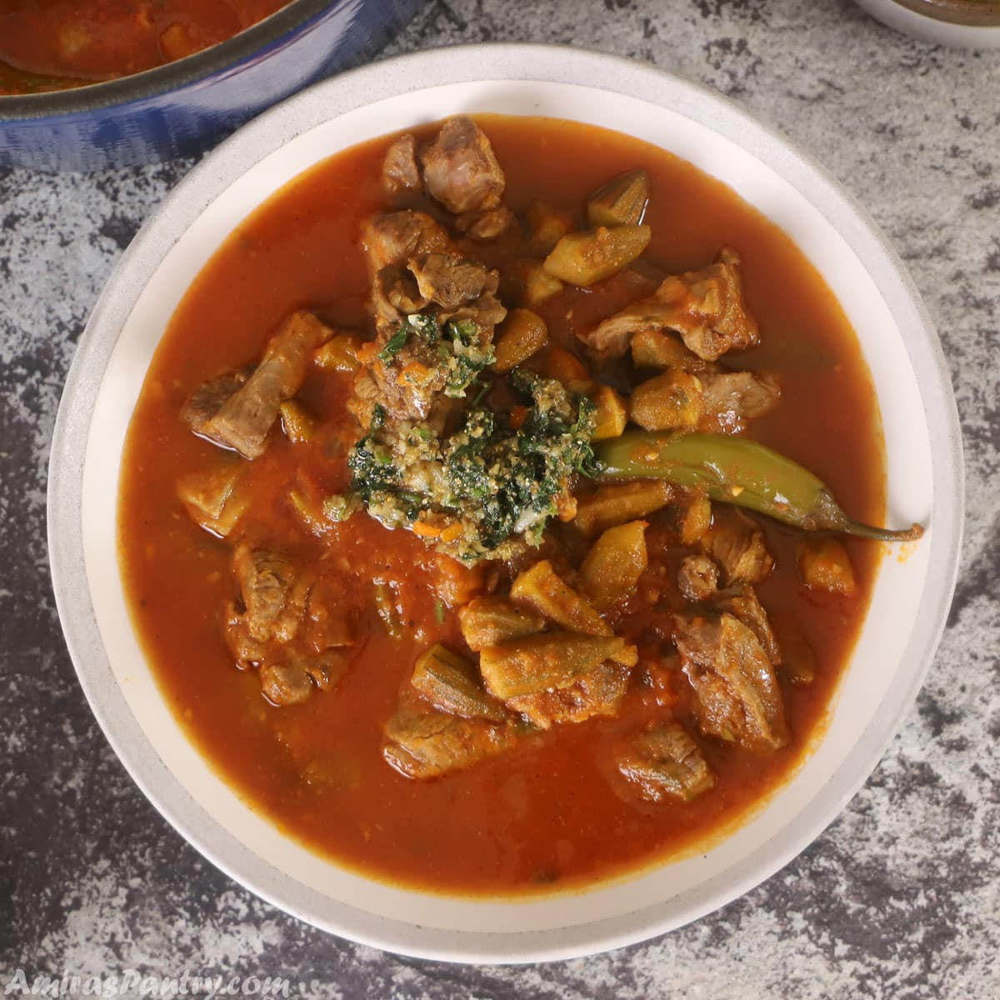

Bamya

Bamya is one of Egypt's signature dishes, that's why you will find about 3 or 4 versions for bamiya. I've showed you before the Cairo style bamya stew, this time I am showing you a different version coming from another part of Egypt. Serve it like Egyptians with vermicelli rice or pita bread and a squeeze of lemon.
Main Ingredients
- Beef
- Vegetables
- Rice
- Bread
Steps
- In a pot, heat olive oil then add onion, garlic, and coriander then sauté for about 2-3 minutes until fragrant.
- Add chopped cilantro, stir until fragrant then stir in jalapeño peppers.
- Mix in the okra and tomato paste.
- Keep stirring until tomato paste is well distributed, image 4.
- Pour in tomato sauce, broth salt and pepper. Bring to a gentle boil then reduce heat and simmer for 20 minutes.
- Add in cooked lamb cubes, stir to combine, and continue cooking on low until okra is tender.
- Meanwhile, make the garlic relish or topping by heating olive oil in a non-stick skillet. Add garlic, coriander, cilantro, and chili peppers.
- Saute relish ingredients well for a minute or two until fragrant. Pour half the relish in the okra pot and let it simmer for another 4 minutes. Reserve the remaining half to top the bowls when serving.